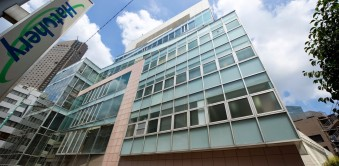

【個室レンタルオフィス】
オープンオフィス渋谷hills
全室開放的な窓面をもつオフィス渋谷hills空間はまさに「天空の城」
セルリアンタワー・インフォスタワーに隣接する渋谷の新オフィスエリアに位置する。ビルは建築家：安藤忠雄氏の（弟）北山孝二郎氏の設計による有名な建物。クリアでシンプルなデザインはオフィスでの仕事を常にクリエイティブなものにしてくれる力を持つ。渋谷・恵比寿・代官山界隈を見下ろす窓からの景観は絶品のレンタルオフィスです。
オープンオフィス渋谷hillsが提供するオフィスサービス
-
 高速インターネット＜光ファイバー＞
高速インターネット＜光ファイバー＞
- 100Mbpsの光ファイバーによるブロードバンド環境をご用意しました。各部屋に配線済みですので、パソコンに繋げばすぐLAN経由で高速インターネットを利用出来ます。
-
 ネットワーク・カラーレーザープリンタ+スキャナー
ネットワーク・カラーレーザープリンタ+スキャナー
- ネットワークを利用して、各お部屋のパソコンから印刷できます。プリンタをご用意いただく必要もございません。
スキャナー機能も搭載しております。
-
 カラーレーザーコピー
カラーレーザーコピー
- フロア内にご用意してあります。カード方式でコピーが出来ますので、小銭の準備が不要です。
-
 シュレッダー
シュレッダー
- 機密情報の破棄にご利用いただけます。
-
 ICカードキーによる入室管理
ICカードキーによる入室管理
- 専用ICカードを使ったホテル式のスマートシステムを用いて、セキュリティーを向上させています。
-
 宅配ロッカー
宅配ロッカー
- 24時間、荷物の受け取りが可能な宅配ロッカーを採用しています。
-
 ミーティングルーム（会議室）
ミーティングルーム（会議室）
- 商談・会議にご利用いただける共有スペースをご用意しています。インターネットで簡単に予約をしていただけます。
-
 自動販売機
自動販売機
- ちょっとした休憩や、お客様のおもてなしにもどうぞ。

オープンオフィス渋谷hillsの特徴

会員さんからの声を反映して、「電子レンジ」が導入されました。
オフィスワークに快適性をどんどん追加しています。
ビルは安藤忠雄氏の弟である北山孝二郎氏の設計による有名な建物で、壁の一面がガラスになっていて採光が最高のレンタルオフィス（角部屋では二面がガラス面）。オフィスから渋谷界隈を見下ろす眺めは絶品です。
オフィス周辺のMap
オープンオフィス渋谷hills近隣のスポット
- ■金融機関
- 桜丘郵便局
三井住友銀行
三菱東京UFJ銀行 - ■商業施設
- 東急プラザ
マークシティ - ■飲食店
- ジョナサン
オープンオフィス渋谷hillsの住所・アクセス
- 東京都渋谷区桜丘町15-14 フジビル40 7F
- JR各線・地下鉄 銀座線、半蔵門線・「渋谷駅」
南口（モヤイ像がある）から 徒歩5分。
オープンオフィス渋谷hillsのフロアマップ
7F

※フロア内は禁煙です。
※こちらはイメージ図となりますので、状況が異なる場合は現況を優先させていただきます。
- ◆初回納入金
- 利用料1ヶ月分の保証金
- ◆共益費
- 水道光熱費、ビル共益費、ゴミ出し、フロア・トイレの清掃、共有部分の消耗品代を含みます。